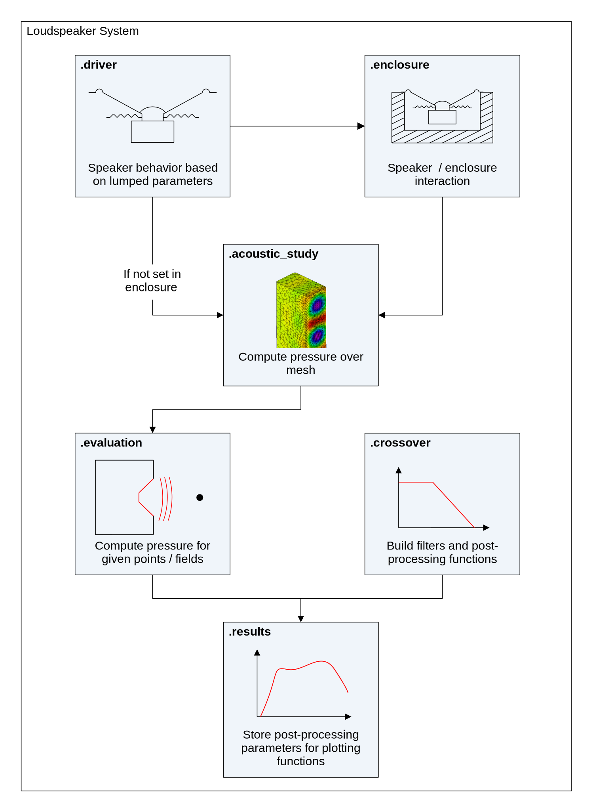

Chapter 2 loudspeakerSystem
The main advantage of using electroacPy is its loudspeakerSystem class. It provides multiple tools such as:
- lumped element calculator for loudspeakers and enclosures, this includes basic alignment tools and Thiele/Small parameter loaders,
- bempp-cl wrapper to easily setup acoustic studies,
- tools to work with vibrometry data,
- automated evaluation setup for polar and spherical radiation, pressure fields and more,
- save/load functions to easily back-up and share projects.
A loudspeakerSystem object manages sub-objects through dictionaries. Each drive unit, enclosure, study and evaluation added to the system can be accessed through the corresponding dictionary:
.driver[],.enclosure[],.crossover[],.vibrometry[],.acoustic_study[],.evaluation[],.results[].
A loudspeakerSystem object is defined as simply as:
import electroacPy as ep
#%% Create system object - with pre-defined frequency axis
system = ep.loudspeakerSystem()The default frequency axis is defined from 20 Hz to 2500 Hz with 50 points. Alternatively, you can specify custom frequency axis, which must be a numpy array.
import electroacPy as ep
import generalToolbox as gtb
#%% Create a system object with a custom frequency axis
frequency = gtb.freqop.freq_log10(10, 5000, 75)
system = ep.loudspeakerSystem(frequency)

Figure 2.1: Class structure.